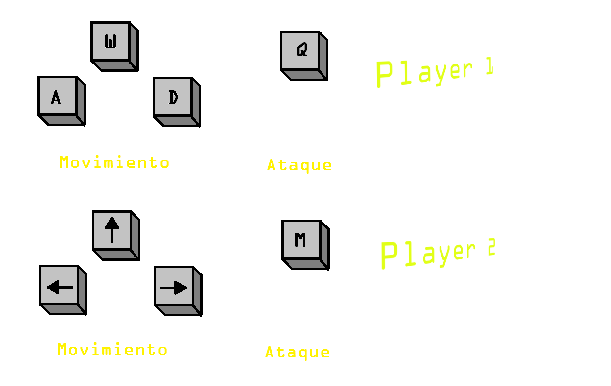

THE SKYWALKERS
Instrucciones
Autores
Referencias
!JUGAR!
Instrucciones

Autores
Alvaro Martinez Lopez-Zuazo (100284020)
Federico Martin Sanchez (100285372)
Israel Matellan Jimenez (100072653)
Víctor Rodrigo Pajares (100284190)
Grado en Ingenieria de Sistemas Audiovisuales Grupo 67
Universidad Carlos III de Madrid
Referencias
Sprites de los personajes:
Darth Vader:
https://www.spriters-resource.com/snes/sempirestrike/sheet/52090/
Luke Skywalker:
https://www.spriters-resource.com/snes/superjedi/sheet/11111/
Animaciones canvas:
http://www.w3schools.com/tags/canvas_drawimage.asp
Codigo de salto:
http://www.williammalone.com/articles/create-html5-canvas-javascript-game-character/2/
Codigo asociado a cada tecla:
http://www.w3.org/2002/09/tests/keys-cancel2.html
Selector de colores HTML:
http://www.w3schools.com/tags/ref_colorpicker.asp
Tutoriales:
http://billmill.org/static/canvastutorial/index.html
Aula Global:
Transparencias HTLM5
Transparencias CSS
JavaScript
Video y audio en HTLM5
Trabajando con el canvas de HTML5
¡JUGAR!
Llévame al juego